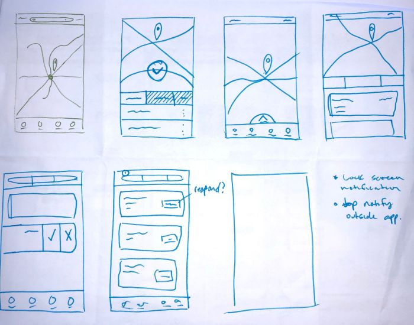
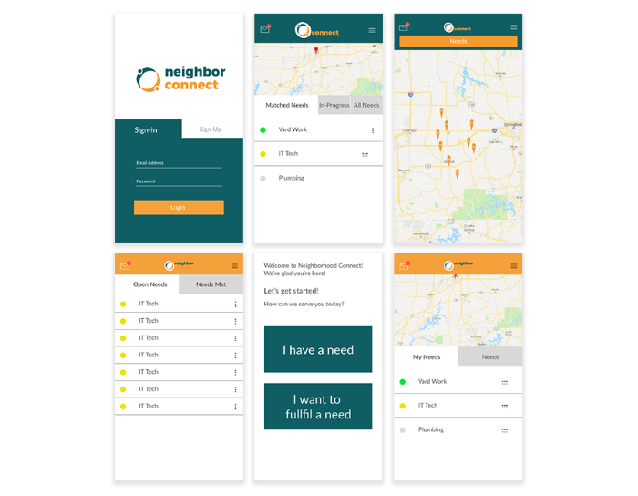
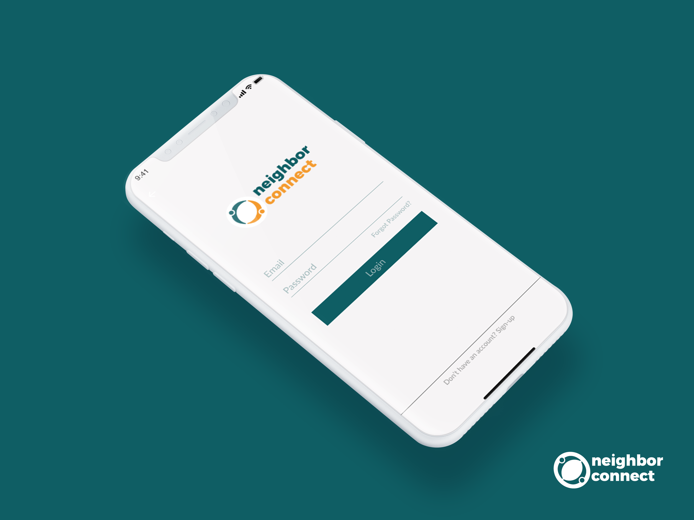

About: Neighbor Connect is a program developed by Water Gardens, a local organization that focuses on homeless needs and rehabilitation. Seeing the usefulness that the program had brought to them in the past in their own work, they decided to explore options to expand the program to include a wider user base.
Problem Solved: The program was based on the idea of neighbors helping neighbors. They wanted literal neighborhoods to be able to see the needs of their neighbors and fulfill them quickly and safely. When they came to my team at Ramsey the entire program was being run off of hand written notes, text messages, and phone calls.
Solution: To create a centralized place for new and existing members to have access to all functionality and communications.
We started by identifying our four separate types of users, we did this by listing out our needs and the hierarchy of the program, this gave us personas for our four main user views: our benefactor neighbor, our neighbor in need, and admin for local support, and a super admin for global supervision and support. These personas would be the pillars for the strategy and architecture of the site.
Since our user base would be utilizing location-based-services to connect with their neighbors, and the fact that mobile users constitute +-60% of the internet users, we took an educated guess that it would be heavily used by those on mobile devices. This is a large reason we implemented a mobile-first design.
We needed to match the app to the current program branding. We relied heavily on custom icons and using the brand color palette to accent the simple layout and create a unique look. We strove to include only that which was necessary and stray away from obtrusive design.
After many ideations, we came to the design we felt like was best suited for the need. It championed intuitive gestures and common design patterns to bring an interface that felt very natural to the user. upon completion of the design, we had a clean handoff to the company executing the heavy lifting development.
We were able to contain the functions of a complex program in a beautiful and manageable website as well as deliver a product that the client was more than happy with, including all the features that requested as well as some additions we came up with along the way. They were very excited for the possibilities and potential of the site.